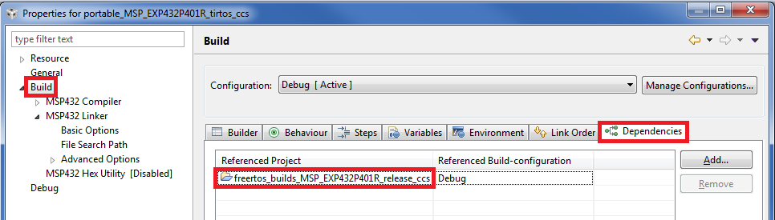

Introduction
With changing markets and new devices always coming out, software should be written in a manner which allows it to be moved to different devices easily. With the SimpleLink™ software development kits (SDKs), no/minimal application software changes are required when porting to a new device or RTOS. This is accomplished by using TI Drivers and POSIX APIs.
The TI Drivers interface is the same for all SimpleLink Devices, thus it allows easy movement of target code. The SimpleLink SDKs have POSIX support for both TI-RTOS and FreeRTOS. This allows easy movement between these RTOS environments.
This workshop is an introduction to the portability of applications using SimpleLink SDKs. This workshop will focus on the key areas that might be affected when porting an existing driver application to a different SimpleLink device.
The lab session targets porting the demos/portable example from the MSP-EXP432P401R LaunchPad™ Development Kit to CC2640R2F wireless MCU LaunchPad™ development kit. The steps/concepts are applicable for any of the SimpleLink SDK devices though. While the lab will focus on porting a CCS project, the concepts are the same for IAR and makefile based projects.
Here's what we'll learn:
- Key areas that might require a change when porting an application to a different device
- Key areas that might require a change when porting an application to a different RTOS
Prerequisites
Recommended Background Reading
Software
- This tutorial can be done 100% with a web browser in CCS Cloud. However, the exercises can also be completed using desktop/offline tools as well.
Hardware
- Any two SimpleLink LaunchPad Development Kits
Areas of potential change when porting an application
These are the four areas that should be looked at when porting an application:
- Project Settings
- RTOS Configuration Project
- Board Files (e.g. MSP_EXP432P401R.c)
- Other Target Code
Let's look at each one of these in more detail.
Project Settings
Here is a picture of some of the compiler options for an MSP432 application. As you can see, some of these are device specific. In this workshop, we'll see how to address these when moving to a new device.
We highly recommend you keep track of the Project Setting changes you make with your application. You'll potentially need to make similar changes when you move to the new device and it's good engineering practice.
RTOS Configuration Project
Let's focus on TI-RTOS based applications first. The TI-RTOS Configuration File (aka .cfg file) is required for each application that uses TI-RTOS. This file configures TI-RTOS, allowing it to scale up or down as needed. There are two ways a .cfg file can be consumed by the application (from a final .out standpoint, both ways are basically equivalent).
- The .cfg file in the example project. All the TI-RTOS kernel examples use this method.
- The .cfg file is a dependent project. All the other TI-RTOS based examples use this method. This approach also allows examples to be ported to a different RTOS more easily.
Generally, the .cfg file does not contain device specific configuration.
For FreeRTOS, all examples depend on a FreeRTOS project. Similarly to TI-RTOS, generally, the FreeRTOSConfig.h file does not contain device specific configuration.
For a more detailed discussion of the RTOS configuration files, please refer to TI-RTOS Basics
Board Files
These files are board specific (and therefore device specific also). There are five files
- board.c: Source file with the TI Drivers configuration. In the below example, it is MSP_EXP432P401R.c
- board.h: Include file for the TI Drivers configuration. In the below example, it is MSP_EXP432P401R.h.
- board.cmd: The linker file for this board. In the below example, it is MSP_EXP432P401R.cmd.
- Board.html: Picture of the board & description of the LEDs, buttons, etc.
- Board.h: this contains macros that allow driver examples to be portable across other boards. For example instead of using MSP_EXP432P401R_GPIO_LED_ON, the application uses Board_GPIO_LED_ON.
We highly recommend you keep track of the changes you make to these files. You'll potentially need to make similar changes when you move to the new device.
For a more detailed discussion of the board files, please refer to TI Drivers Configuration Workshop.
Other Target Code
To make a portable application, try to minimize use of device specific items. In the SimpleLink SDKs, if you use TI Drivers, you've taken the first big step to making a portable application. Of course there may be some features that are device specific exposed in the Driver_control() APIs that you want to use. In this case, we recommend you try to isolate the device specific calls to a single location or file.
Porting to Different Devices
When porting to a different device, we recommend you import the Project Zero or out of box application from the destination device and use that as a template. You'll use the Project Settings, Board files and RTOS Configuration project from the template project with potentially no changes to the application target code.
To help achieve zero application code changes, there are the following recommendations
- Try to use the same version of Core SDK within the SimpleLink SDK for both devices. Please look the SDK’s release notes to determine the Core SDK version.
- Try to avoid driverlib (source/ti/device/*) calls in application code.
- Try to avoid other device specific calls. Examples of this are
- Driver_control() with device driver specific commands.
- Device specific Power APIs (they'll have the device name in the API)
- Device specific kernel APIs (they'll have the device name in the API).
- Try to avoid device specific settings in the kernel configuration files.
- Note changes to any of the following areas. These will be useful when porting to the new device.
- Build setting changes (e.g. new include search paths).
- Board file files changes (e.g. adding a new UART).
- Kernel Configuration changes (e.g. changing number of task priorities).
Task 1: Import Portable and Template Projects
We are going to port a MSP432 application to a CC2640R2 LaunchPad. We'll be using TI Resource Explorer and CCS Cloud to do this lab. Please accept the license agreement as needed if you are comfortable with them.
Go to dev.ti.com and select Resource Explorer.
Import demos/portable project from SimpleLink MSP432 SDK into CCS Cloud (CCS Cloud is launched in a new browser tab and may require a login).
In your Resource Explorer window, import CC2640R2-LAUNCHXLs drivers/empty project from SimpleLink CC2640R2 SDK
This will be the project we'll port to.
Your CCS Cloud projects should look like this
Task 2: Project Settings Changes
No Action needed!
No "extra" project settings were done in the portable project, as the default project settings on empty_CC2640R2_LAUNCHXL_tirtos_ccs are fine.
Task 3. TI-RTOS Configuration
No Action needed!
The portable_MSP_EXP432P401R_tirtos_ccs project uses the shared TI-RTOS release configuration. The empty_CC2640R2_LAUNCHXL_tirtos_ccs also uses the same configuration (albeit for a different target). Therefore no changes are needed to the empty_CC2640R2_LAUNCHXL_tirtos_ccs TI-RTOS configuration.
Task 4. Board Files
No Action needed! These steps are going fast!
The portable_MSP_EXP432P401R_tirtos_ccs project was able to use the default Board files. The empty_CC2640R2_LAUNCHXL_tirtos_ccs application also uses the default ones. Therefore no changes are needed to the empty_CC2640R2_LAUNCHXL_tirtos_ccs TI-RTOS configuration.
Task 5. Other Target Code
First remove the
empty.c,main_tirtos.c,README.htmlandREADME.mdfiles from the empty_CC2640R2_LAUNCHXL_tirtos_ccs project.Let's copy the
console.c,main_tirtos.c,temperature.c,README.md, andREADME.htmlfiles in portable_MSP_EXP432P401R_tirtos_ccs and paste them into empty_CC2640R2_LAUNCHXL_tirtos_ccs.Your empty_CC2640R2_LAUNCHXL_tirtos_ccs project should look like this now.
Task 6. Build and Run!
Let's hook up your CC2640R2-LAUNCHXL and hit the Debug button in CCS Cloud.
Time to open a terminal session and have the TMP007 give use the temperature! Please refer to the README.html for details on how the application works. Please refer to the README.html for details (e.g. baudrate, etc.). Please note, there is a Serial option in CCS Cloud.
To connect, open the Target->Connect COM Port...
Caveats
The CC3220 examples have power management disabled by default in the Board.c. This is to allow a better emulation experience. The portable project is designed to allow the application to go into low power modes. Since the same portable code works on all SimpleLink MCU Launcpads, the CC32XX symbol is used to determine whether or not to include the device specific enabling of the power management framework in the console.c file.
So for CC3220 boards, let's add the CC32XX symbol
Please note: we could have put these changes into the CC3220S_LAUNCHXL.c file instead of having the conditional code in console.c (location shown below).
Quiz
Let's see if you picked up some key points...
Pick which areas you may have to change when you move to a new device (more than 1 correct answer)
Every SimpleLink device has TI Drivers support
Every SimpleLink device has POSIX support
Bonus Task: Switching RTOS
If the application is based on POSIX, the application can be ported to the different RTOS easily. Unfortunately this cannot be done on CCS Cloud currently. We'll use desktop CCS to do this lab.
To move portable to from TI-RTOS to FreeRTOS, the following are the steps we need to do
- Import a FreeRTOS example to get:
main_freertos.cfile- FreeRTOS Project Settings
- FreeRTOS Kernel Project
- FreeRTOS Linker file
- Change some Project Settings in portable
- Change RTOS Configuration Project in portable
- Use the main_freertos.c file in portable
Bonus Task 1: Import Projects
Open View->Resource Explorer in your desktop CCS and import the portable_MSP_EXP432P401R_tirtos_ccs project into the IDE.
Import a FreeRTOS example (this will be used to get some files and project settings). Let's use
empty. Make sure to pick the FreeRTOS one!
Your projects should look like this:
Additionally, please make sure you have the FREERTOS_INSTALL_DIR is setup as described in the SimpleLink SDK User Guide.
Bonus Task 2: Update Project Settings
Copy (Ctrl-C or your OS equivalent) all the FreeRTOS include search paths from the empty project.
Remove all the include search paths in portable and paste in the ones from the empty project. Portable should look the same now.
Copy (Ctrl-C) the FreeRTOS libraries from the empty project.
and paste them into the portable project settings. Also remove the TI-RTOS and DPL libraries. Portable's libraries should look similar to this afterwards.
Finally in portable's diagnostic properties, let's suppress the "_c_int00 not being the entry point warning" (resetISR is for FreeRTOS).

Bonus Task 3: Change RTOS Configuration Project
Point to the FreeRTOS Kernel in the project settings for portable. You'll need to "Add"
freertos_builds_MSP_EXP432P401R_release_ccsand removetirtos_builds_MSP_EXP432P401R_release_ccs. Portable's dependent project should look like this:
Bonus Task 4: Board Files
- Remove the
MSP_EXP432P401R_TIRTOS.cmdlinker from the portable example. - Add empty's
MSP_EXP432P401R_FREERTOS.cmdlinker file to the portable example.
Ctrl-C and Ctrl-V (or your OS equivalent) works with moving files in CCS!
The files get copied as you expect!
Bonus Task 5: Update Depend Kernel Project
Only the main_tirtos.c file needs to change. All the other application code stays the same because we are using POSIX. We could change main_tirtos.c to use FreeRTOS or remove the main_tirtos.c and use the empty main_freertos.c file then tweak as needed...we'll do the latter.
- Remove the main_tirtos.c file from the portable example.
Add empty's main_freertos.c file to the portable example.
There were a few lines in the main_tirtos.c file that we actually needed. Please place the following items into main_freertos.c
- Add GPIO.h include after Board.h file
#include "Board.h" #include <ti/drivers/GPIO.h> // add this line- Change
extern void *mainThread(void *arg0);to
/* Mutex to protect the reading/writing of the temperature variables */ pthread_mutex_t temperatureMutex; extern void *temperatureThread(void *arg0); extern void *consoleThread(void *arg0);- Add the Pthread and mutex creation into main_freertos.c. Change the following lines
retc = pthread_create(&thread, &attrs, mainThread, NULL); if (retc != 0) { /* pthread_create() failed */ while (1); }to
retc = pthread_create(&thread, &attrs, consoleThread, NULL); if (retc != 0) { /* pthread_create() failed */ while (1); } /* * Let's make the temperature thread a higher priority . * Higher number means higher priority in TI-RTOS. */ priParam.sched_priority = 2; pthread_attr_setschedparam(&attrs, &priParam); retc = pthread_create(&thread, &attrs, temperatureThread, NULL); if (retc != 0) { /* pthread_create() failed */ while (1); } /* Create a mutex that will protect temperature variables */ retc = pthread_mutex_init(&temperatureMutex, NULL); if (retc != 0) { /* pthread_mutex_init() failed */ while (1); } /* Initialize the GPIO since multiple threads are using it */ GPIO_init();If you are not feeling good about this steps cutting and pasting, you can cheat and import portable for FreeRTOS and just grab that main_freertos.c.
Bonus Task 7: Build
Build and run! You've moved from TI-RTOS to FreeRTOS with a couple steps. To move from FreeRTOS to TI-RTOS, it's basically the opposite steps.
This work is licensed under a Creative Commons Attribution-NonCommercial-NoDerivatives 4.0 International License.